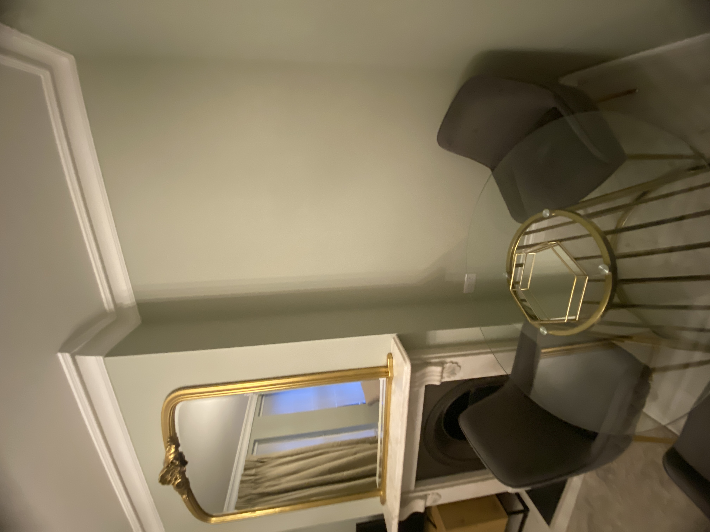
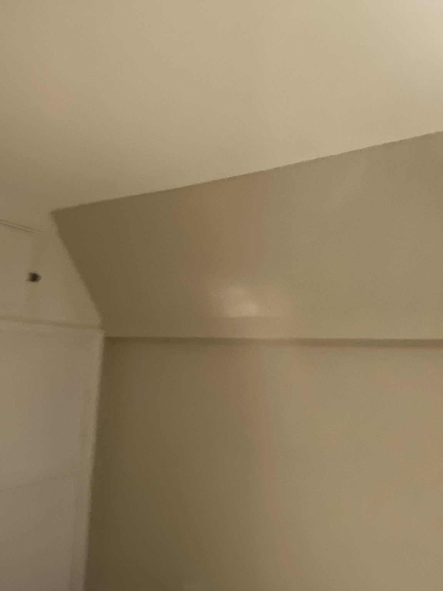
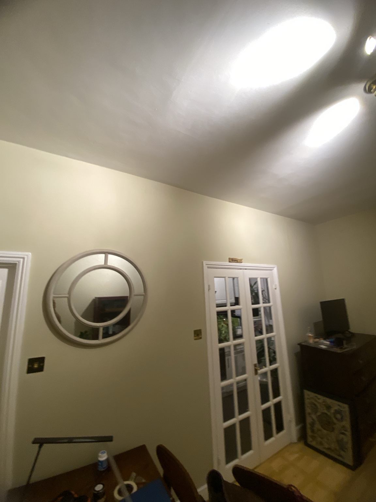
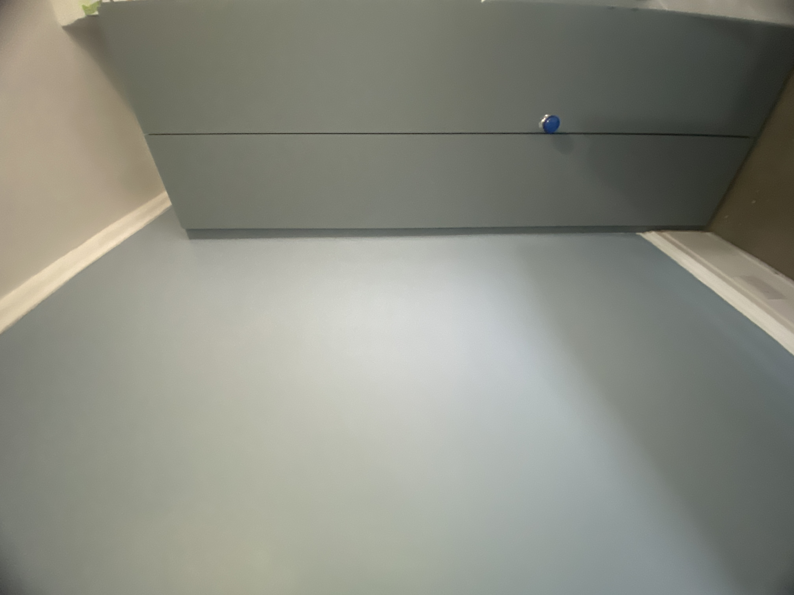
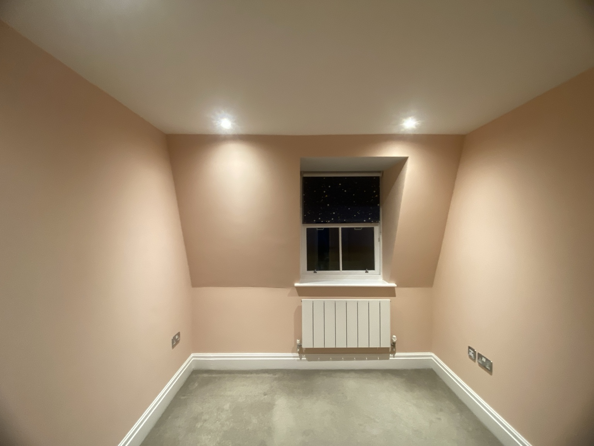
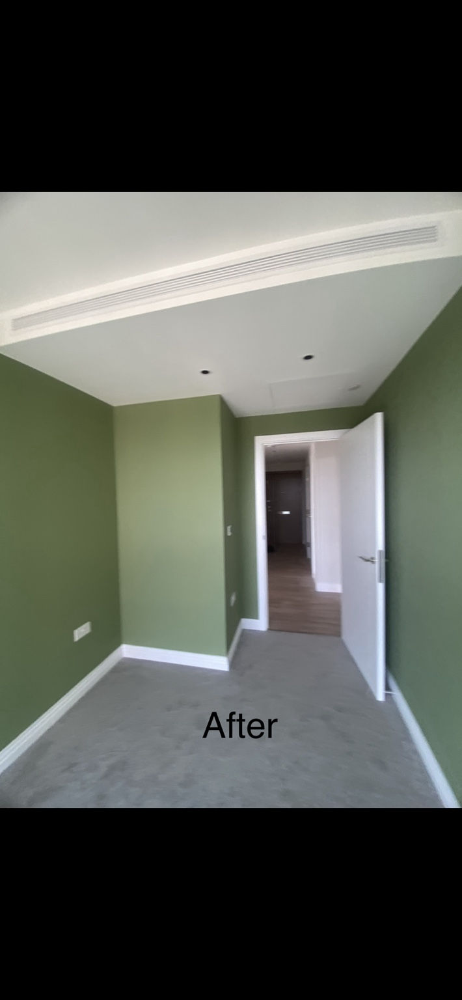
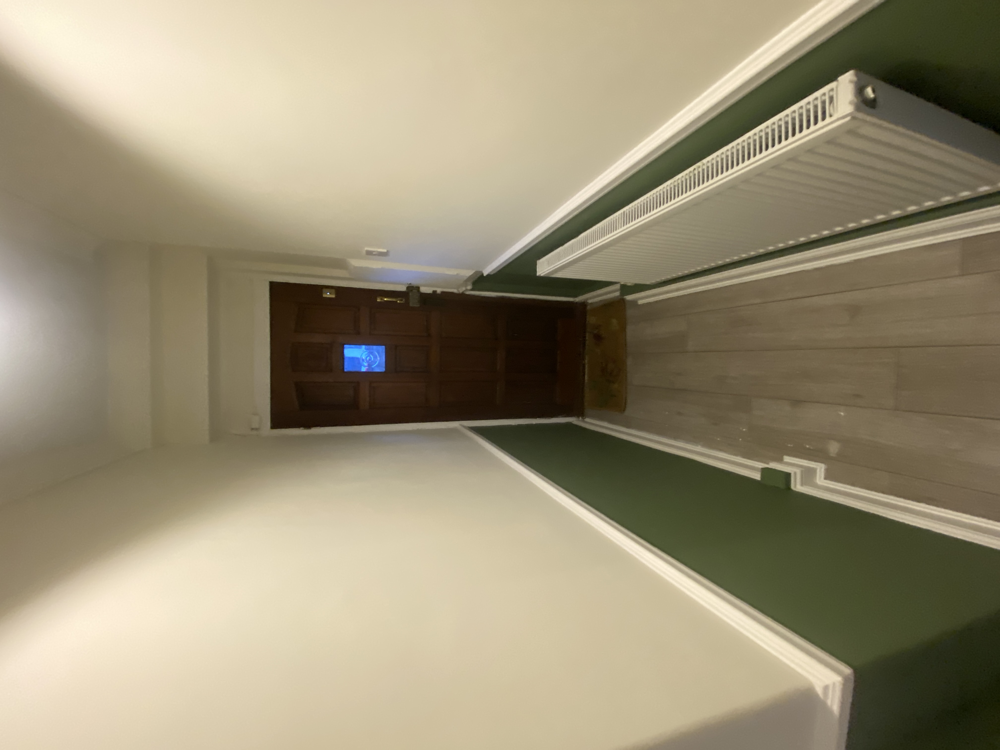
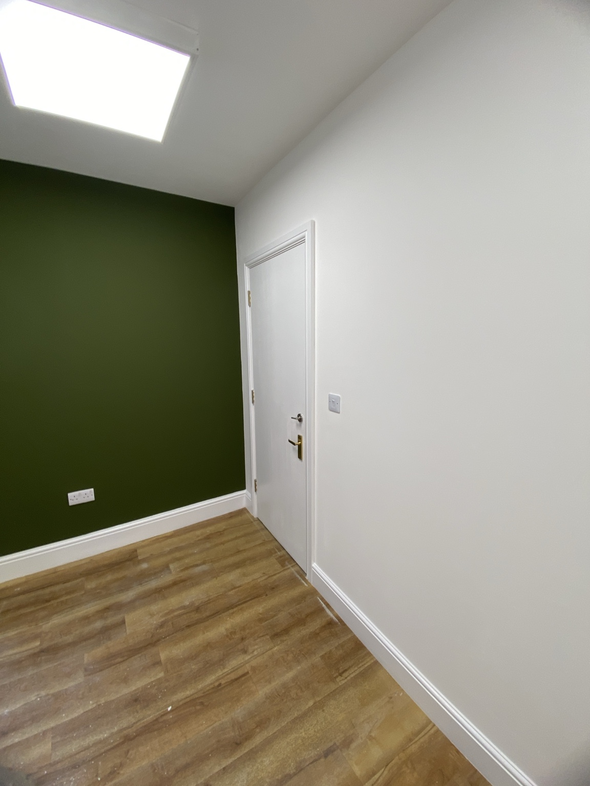
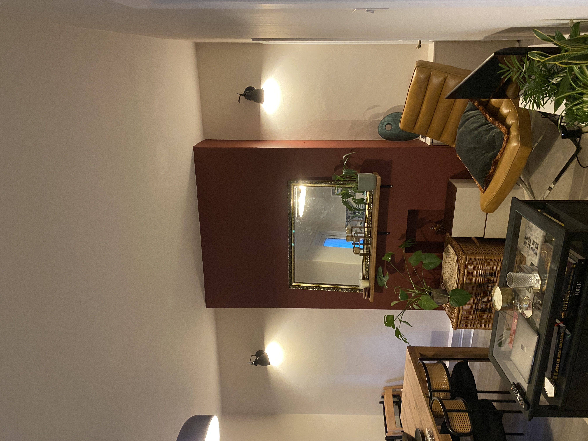
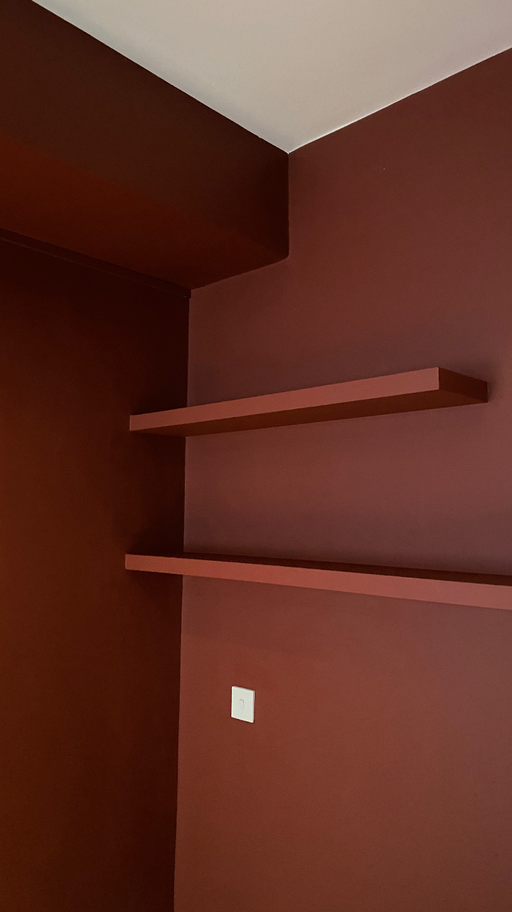

From soft, calming whites to earthy greens and warm mushroom tones,
discover the shades influencing interiors in 2026, with inspiration
from real decorating projects in London.
These are the five colour families we’d consider when planning a refresh,
a feature wall or a complete room transformation, ranked from our own
project work and how they connect with this year’s trends.
01
THE NATURAL COLLECTION
Sage & olive green
Grounded, restorative and connected to nature. Green works beautifully with natural timber, warm whites and simple detailing.
Ideal for · Living rooms · Bedrooms · Feature walls
Our strongest statement colour. The standout choice for a fashionable, premium-looking room.
02
THE WARM COLLECTION
Mushroom & taupe
Soft earthy neutrals bring depth without making a room feel too dark. A versatile option for calm, understated interiors.
Ideal for · Hallways · Living rooms · Whole-home schemes
Our best everyday colour. Wide appeal for whole-house decorating and rental properties, and a softer alternative to cool grey.
03
THE TIMELESS COLLECTION
Warm whites & stone
Gentle whites and pale stone shades create a light, flexible backdrop for furniture, artwork and architectural details.
Ideal for · Smaller rooms · Ceilings · Open-plan spaces
Echoes Cloud Dancer. A dependable choice for ceilings, walls and complete property refreshes.
04
THE CONTEMPORARY COLLECTION
Muted blue & blue-grey
Quiet blue tones add character while keeping a room composed. Pair them with crisp white woodwork and natural textures.
Ideal for · Bedrooms · Studies · Alcoves
In step with Dulux. Closest to Mellow Flow, from the Rhythm of Blues collection.
05
THE EARTHEN COLLECTION
Soft terracotta & peach
Warm, muted clay shades bring a welcoming atmosphere. Use them to add personality without overwhelming the room.
Ideal for · Bedrooms · Dining spaces · Cosy corners
A warm accent. A softer, Mediterranean-feeling choice, particularly suited to bedrooms.
REAL HOMES · REAL COLOUR · LONDON
Colour comes to life in real spaces.
From elegant sage green fireplaces to warm yellow bedrooms and
sophisticated olive interiors, explore a selection of EveroDecor
painting and decorating projects across London.
Every room tells a different colour story. These projects show how
carefully chosen shades, professional preparation and the right
paint finish can transform an interior. Explore the colours,
discover the combinations and find inspiration for your own home.
11 PROJECTS · WEST & CENTRAL LONDON

VICTORIA · THE NATURAL COLLECTIONSage green, beautifully balanced

SW1 · THE WARM COLLECTIONUnderstated warmth and character

FULHAM · THE YELLOW COLLECTIONSoft yellow, natural brightness

NW8 · THE CONTEMPORARY COLLECTIONBlue tones with a modern edge

FULHAM · THE SOFT COLOUR COLLECTIONA softer expression of pink

HACKNEY · THE NATURAL COLLECTIONLight green, fresh and inviting

INTERIOR DETAIL · THE ENTRANCE COLLECTIONA welcoming first impression

SW1 · THE OLIVE COLLECTIONOlive green in a professional spaceBARNES · THE YELLOW COLLECTIONA confident touch of yellow

SW15 · THE EARTHEN COLLECTIONTerracotta warmth around the fireplace

NOTTING HILL · THE DEEP COLOUR COLLECTIONRich red, bold and expressive
All photographs showcase EveroDecor projects across London.
Actual paint colours may appear different depending on natural
lighting, surface texture, camera settings and screen calibration.
BEFORE YOU CHOOSE A COLOUR
Three details that make all the difference.
01
Look at the natural light
A north-facing room can make some colours feel cooler. Test samples at different times of the day before deciding.
02
Choose the right finish
Matt finishes create a softer appearance, while durable matt and eggshell options may be more practical in busier areas.
03
Test before committing
Paint sample patches on more than one wall. Check how the colour works with flooring, furniture and woodwork.
THE EVERODECOR TAKE
Which colours could define 2026?
The most fashionable colour isn’t always the one homeowners choose most
often, so we’d plan either with you. Here is how we see 2026 across the
homes we decorate.
THE STATEMENT COLOUR
Sage & olive green
The most interesting colour for feature walls, bedrooms and living rooms, especially with white woodwork and warm lighting.
THE EVERYDAY COLOUR
Mushroom, taupe & warm white
The colours we expect to see on most walls, from whole-house refreshes to rental properties, because they suit almost any home.
The best colour is the one that works with your room, your light and
the way you live.
Sage green fireplace, Victoria. Photograph: EveroDecor.
OUR COLOUR OF THE YEAR 2026
Sage & olive green
Every year the big paint brands name their colours of the year. For 2026,
Pantone chose a soft white, Dulux a trio of blues and Benjamin Moore a deep
espresso brown. Ours comes from the walls we actually paint.
Sage and olive green appear across our recent London projects, from a sage
green fireplace in Victoria to an olive interior in SW1. It is calm, grounded
and easy to live with, and it looks equally at home in a bedroom, a living
room or on a feature wall.
Green keeps turning up in the homes and spaces we decorate across London, so this is a choice we can show on real walls rather than only predict.
It sits well with the other 2026 colours
Sage and olive pair naturally with warm whites like Cloud Dancer, and settle comfortably beside muted blues and deep browns.
It suits real rooms
It works with white woodwork, natural timber and warm lighting, so it flatters everyday homes, not only showrooms.
Runner-up: mushroom & taupe. If sage feels too bold, our everyday choice is a warm mushroom or taupe, which suits almost any home.
PANTONE COLOUR OF THE YEAR 2026
PANTONE 11-4201 Cloud Dancer
Pantone describes Cloud Dancer as a lofty, calming white. Its quiet
character reflects a desire for clarity, simplicity and breathing
space in the home.
The palettes later in this article are EveroDecor’s own colour
selections and trend observations, not official Pantone selections.
Two of the biggest names in paint have also announced their 2026 picks: a family of blues from Dulux and a deep, tailored brown from Benjamin Moore.
Mellow FlowFree GrooveSlow Swing
DULUX · COLOURS OF THE YEAR 2026
Rhythm of Blues
For the first time, Dulux has named three Colours of the Year, all blues, each suited to a different mood.
Mellow Flow A light, airy blue that feels calm without being cold.
Free Groove A vibrant blue that adds energy to a room.
Slow Swing A deep, meditative blue for cosy, grounded spaces.
On the walls: Mellow Flow suits a calm bedroom, while Slow Swing works well on an alcove or feature wall.
Silhouette
BENJAMIN MOORE · COLOUR OF THE YEAR 2026
Silhouette AF-655
A deep espresso brown with subtle charcoal notes, inspired by tailored suiting. It reflects a wider return to rich, enveloping browns.
Character Moody, sophisticated and timeless.
Pairs with Warm whites, natural timber and soft neutrals.
On the walls: a very dark shade, so it’s best used with intent on a feature wall, a snug or joinery, balanced with plenty of light.
Swatches are illustrative, not official colour-matched samples. Colour of the Year details are taken from the Pantone, Dulux and Benjamin Moore announcements.
READY TO REFRESH YOUR HOME?
Let’s find the right colour for your space.
Planning a feature wall or a complete room makeover? EveroDecor provides professional painting and decorating across West London and Greater London.